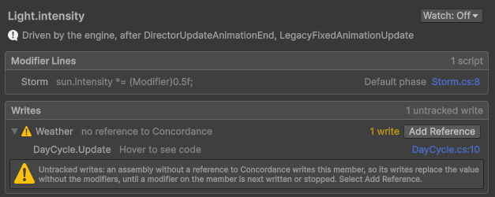

Untracked writes
An untracked write is a write from code Concordance doesn't rewrite. Concordance picks it up the next time the member's value is computed, or at once when you recombine the member.
How untracked writes apply
Concordance rewrites the assemblies that reference it, including Assembly-CSharp, and sees every
write in them. A write from the following is untracked:
- Precompiled DLLs and the assemblies of Unity packages, including a UnityEvent that sets a property directly, such as a slider's On Value Changed set to a field. A method of yours that a UnityEvent calls is tracked.
- Assemblies of your project that don't reference Concordance.
- A ref or a pointer to a member that your code keeps in a field.
An untracked write stays in effect without the modifiers until the member's value is next computed, when a modifier on it is written or stopped. It then becomes the base value, and the modifiers apply on top.
Find untracked writes
A member's Writes section in the Concordance window lists every write to it in your project's code, DLLs and assets, grouped by source, with the untracked ones marked. For more information, refer to Open a member.

Track an assembly
An assembly definition of your own is tracked once it references Concordance. To add the reference, do one of the following:
- Select the assembly definition asset, add Concordance to its Assembly Definition References, and select Apply.
- In the Concordance window, select a member flagged Untracked writes, then select Add Reference on the assembly in its Writes section.
Recombine a member
To take an untracked write into account at once, call Recombine() on the member right after it:
ThirdPartyAudio.ApplySettings(); // writes AudioListener.volume from a precompiled DLL
AudioListener.volume.Recombine();The member's current value becomes its base value, and the modifiers apply on top.